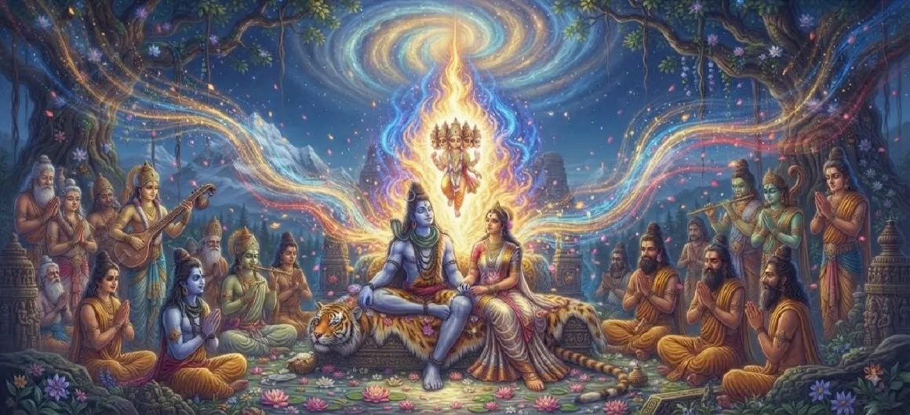

The Emergence of the Divine Energy
The seventh chapter of the Kumara Khanda chronicles the breathtaking manifestation of the supreme divine energy (Tejas) resulting from the union of Lord Shiva and Goddess Pārvatī. This blazing radiance holds the key to the ultimate destruction of Tārakāsura.
The sheer intensity of this divine potency illuminates the cosmos, setting into motion the next phase of celestial intervention to safeguard creation.
Chapter 7 Highlights
Blazing Radiance
The overwhelming illumination of the supreme Tejas.
Concentrated Power
Unprecedented potency born of Shiva and Pārvatī.
Cosmic Reaction
The three worlds responding to the brilliant energy.
Supreme Tejas
The fiery essence destined to form the savior.
Containment Need
The challenge of safely bearing the divine brilliance.
Divine Fulfillment
The prophecy moving steadily toward realization.
Core Topics in This Chapter
- 01The Miraculous Manifestation of the Supreme Tejas→
- 02The Unbearable Brilliance and Cosmic Impact→
- 03The Awe and Concern of the Assembled Gods→
- 04Lord Shiva’s Ordinance Regarding the Energy→
- 05Preparing for the Transfer of the Divine Seed→
- 06The Spellbound State of the Celestial Realms→
- 07Transition to Chapter 8 (Agni Receives Shiva’s Seed)→
The Miraculous Manifestation of the Supreme Tejas
Following the divine union of Lord Shiva and Goddess Pārvatī, a supreme concentration of spiritual energy and fiery radiance manifests, embodying the pure essence of both deities.
This Tejas radiates across space with unmatched intensity.
The Unbearable Brilliance and Cosmic Impact
The brilliance of the emerged energy is so blinding and immense that ordinary realms cannot bear its direct heat. Mountains tremble and rivers feel the intense warmth of this divine fire.
The entire universe stands in awe of this boundless potency.
The Awe and Concern of the Assembled Gods
Witnessing the overwhelming power of the Tejas, Brahma, Vishnu, and the other deities realize that a specialized vehicle or medium is required to carry this energy safely without burning creation.
They turn to Lord Shiva for guidance on how to manage this supreme force.
Lord Shiva’s Ordinance Regarding the Energy
Lord Shiva decrees how his divine energy is to be received and channeled. Recognizing the necessity of the cosmic plan, he consents to entrust the Tejas to a worthy celestial bearer.
His divine command paves the way for the next stage of the mission.
Preparing for Miniature Transfer of the Divine Seed
Preparations are made among the celestial hierarchy to transfer the blazing seed to Agni, the god of fire, who possesses the innate resilience to bear such intense divine warmth.
Agni steps forward as the designated guardian of the divine spark.
The Spellbound State of the Celestial Realms
All beings in heaven and earth watch with bated breath as the golden effulgence fills the heavens, knowing that this momentous event marks the beginning of the end for demonic oppression.
Hope burns as brightly as the divine Tejas itself.
Transition to Chapter 8 (Agni Receives Shiva’s Seed)
With the divine energy fully emerged and awaiting its bearer, the narrative moves to the next pivotal chapter where Agni steps in to receive the supreme seed of Lord Shiva.
The next chapter details this monumental transfer of celestial power.
Key Teachings of Chapter 7
Power of Tejas
Divine union produces immense spiritual energy.
Safe Containment
Intense power requires proper channels to manage.
Resilience of Agni
Every cosmic entity has a unique, vital role.
Radiance of Truth
Divine righteousness illuminates all darkness.
Systematic Progress
Cosmic evolution unfolds in precise steps.
Divine Submission
Aligning with higher cosmic decrees brings peace.
Spiritual Reflection
The emergence of the divine Tejas reminds us that profound spiritual practices and unions generate tremendous creative energy. This energy must be respected, safely channeled, and directed toward uplifting purposes rather than chaotic dispersal.
Living the Message of Chapter 7
Channel your personal creative energies and passions toward constructive, noble endeavors.
Handle intense situations and responsibilities with wisdom and proper preparation.
Recognize that powerful transformations require both strength and careful containment.
Key Spiritual Concepts
The miraculous emergence of the supreme divine radiance.
The metaphysical essence of Lord Shiva's supreme creative seed.
The preparation of Agni to safely carry the blazing Tejas.
The respectful awe experienced by the deities toward supreme energy.
The universal illumination marking the fulfillment of divine destiny.
The creation of fiery righteousness to overcome demonic forces.
Chapter Summary
Kumara Khanda Chapter 7 describes the breathtaking manifestation of the divine Tejas from Lord Shiva and Pārvatī's union, setting the stage for Agni to safely receive the supreme seed.
Frequently Asked Questions
1. What is the primary focus of Kumara Khanda Chapter 7?
Chapter 7 focuses on the miraculous manifestation and overwhelming brilliance of the divine energy (Tejas) emerging from Lord Shiva following the sacred union.
2. Why is this divine energy described as so powerful?
The energy carries the concentrated potency of Lord Shiva's supreme asceticism and divine consciousness, making it too intense for ordinary worlds to bear directly.
3. How does the cosmos react to this emergence?
The entire universe is illuminated by its blazing radiance, prompting the gods to seek ways to safely contain and carry this supreme celestial power.
4. What is the next chapter after Chapter 7?
The next chapter is titled 'Agni Receives Shiva’s Seed'.
“When supreme consciousness ignites active grace, the resulting brilliance outshines all darkness and paves the path for universal deliverance.”
Continue Through Kumara Khanda
Chapter 7 explores the emergence of the divine energy. Continue to the next chapter, Agni Receives Shiva’s Seed.